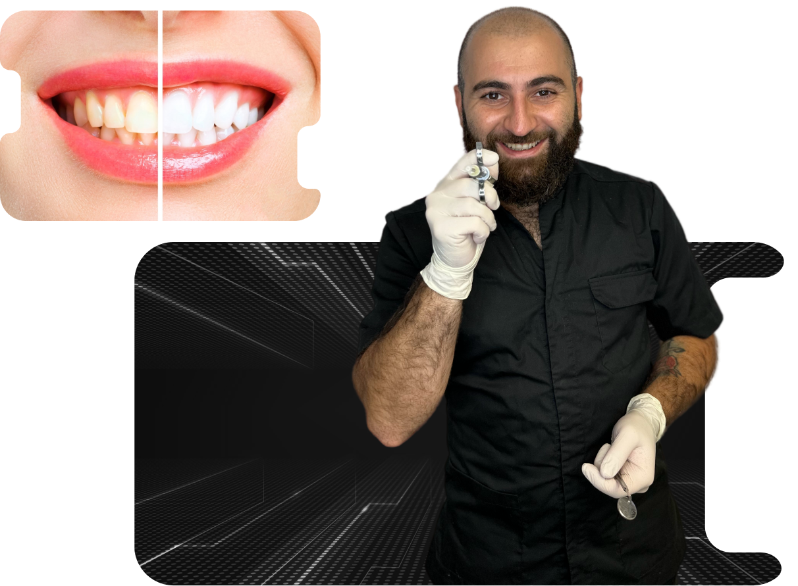

Хочете чисту та здорову посмішку? Професійна чистка зубів допоможе доглядати за зубами,
запобігаючи
майбутнім проблемам! Практично всі знають, наскільки важливо регулярно проводити саме чистку
зубів,
щоб запобігти карієсу та захворюванням ясен.
Професійна чистка зубів — основоположна процедура в стоматології, необхідний етап гігієни ротової
порожнини. Вона полягає в знятті твердих і м’яких відкладень, які утворюються в нормі, але
самостійно, тобто за допомогою лише домашньої гігієни, позбутися від них практично неможливо.

М’які відкладення являють собою зубний наліт, з яким стикаються абсолютно усі. Тверді відкладення
— тобто зубні камені, про них детальніше розказано нижче.
Незалежно від того, наскільки добре ви чистите зуби вдома, з часом майже напевно з’явиться наліт
і зубний камінь від природних бактерій і мінералів у вашій слині.
Як тільки наліт затвердіє до зубного кальцію, який називається зубним каменем, його не можна
видалити без професійної допомоги, і якщо його не лікувати, він може з’їсти ваші зуби, залишаючи
їх слабкими та сприйнятливими до інших стоматологічних проблем.
Багато людей бояться професійної чистки, однак точне знання того, що відбувається під час
процедури, може допомогти полегшити ваш стрес і дозволить вам краще насолоджуватися свіжими
результатами.
Сама процедура професійної гігієни рота може тривати від тридцяти хвилин до однієї години.
Протягом цього часу ви будете лежати в зручному стоматологічному кріслі та не відчувати жодного
дискомфорту.
Перш ніж розпочнеться фактичний процес очищення, проводиться огляд ротової порожнини за допомогою
маленького дзеркальця. Проводиться з метою перевірки зубів та ясясен на наявність ознак гінгівіту
(запалення ясен) або інших потенційних проблем.
Чистка проводиться декількома взаємодоповнюючими засобами:
Ультразвук — використовується для зняття твердих і підясневих відкладень.
Велика частина початкової обробки проводиться за допомогою новітньої технології гігієни зубів —
пристрою Airflow — який використовує комбінацію води та дрібного порошку для видалення поверхневих
плям і раннього зубного каменю.
Видалити плями від чаю, кави, червоного вина та куріння часто можна всього лише за один прийом.
Очищення є ефективнішим і цілеспрямованим, ніж будь-яка процедура, що виконана в домашніх умовах.
Щітка з пастою — завершення процедури, призначене для полірування зубів. Професійна паста має
пісковоподібну консистенцію. Якщо це виконується професіоналом, то шліфування зубів вважається
безпечним двічі на рік. Однак в жодному разі не виконуйте цього в домашніх умовах, адже це може
сильно пошкодити вагу зубну емаль.
Багато наших клієнтів зазначали, що вся процедура була безболісною та майже не відчутною. Однак,
якщо ігнорувати наявність зубних відкладень, може виникнути процес під назвою «пародонтит».
(Прим.: Пародонтит — це запалення тканин, що оточують зуб, яке виникає через запалення ясен. Не
плутати з періодонтитом.)
На цьому рентгенівському знімку ви можете спостерігати серйозний дефіцит кісткової тканини. Лише
верхівки коренів знаходяться в кістки. Це говорить про те, що якщо не вжити заходів, незабаром
пацієнт може позбутися більшості, якщо не всіх зубів.
Це незворотний процес зменшення кістки, який викликає величезні складнощі в заміщенні втрачених
зубів. Його можна тільки уповільнити якісною домашньої та професійною гігієною.
Коли діагностовано захворювання пародонту, пацієнтам потрібна спеціальна чистка зубів
На відміну від звичайного профілактичного чищення, такий догляд є лікуванням, призначеним для
боротьби з пародонтозом. Воно включає в себе як лущення, так і стругання коренів, тобто зубний
камінь необхідно видалити з глибини між зубами та яснами.
Під час стоматолог професійно видаляє зубний камінь між вашими зубами та яснами по всій довжині
кожного зуба, зупиняючись там, де стикаються ясна, корінь і кістка. Найбільше уваги приділяється
окремо кожній кишені на яснах і зрошуванню цих кишень антисептичними препаратами, якщо є запалення
або інфекція.
Призначення технічного обслуговування пародонта відбувається лише після того, як у пацієнта
діагностовано захворювання та проведено лікування для вирівнювання та лущення кореня пародонта. Ці
типи очищення зазвичай рекомендуються кожні три-чотири місяці, в залежності від стадії ураження, щоб
підтримувати здоров’я ясен і викорінювати небезпечний ріст бактерій, що виникає при пародонтозі.
Якщо ж не вичищати м’який наліт з фісур або міжзубних проміжків це призведе до розвитку карієсу
У період між відвідуваннями стоматолога обов’язково дотримуйтесь рекомендацій лікаря щодо гігієни
порожнини рота в домашніх умовах і використовуйте ті засоби та лікування, які він вам порадив.
Перш ніж почати користуватися ниткою, електричною зубною щіткою або іригатором, обов’язково
проконсультуйтеся зі своїм стоматологом.
Незалежно від того, потрібні вам якісь додаткові заходи чи ні, краще не затягувати з візитом до
стоматолога для чищення зубів, щоб повністю запобігти проблемам. Заздалегідь зрозумівши, що
відбувається, ви відчуєте себе спокійніше — і, збережете посмішку ідеальною.
Увага!
Весь прибуток з професійної гігієни (чистки зубів) — на придбання 4 автівок для ЗСУ!